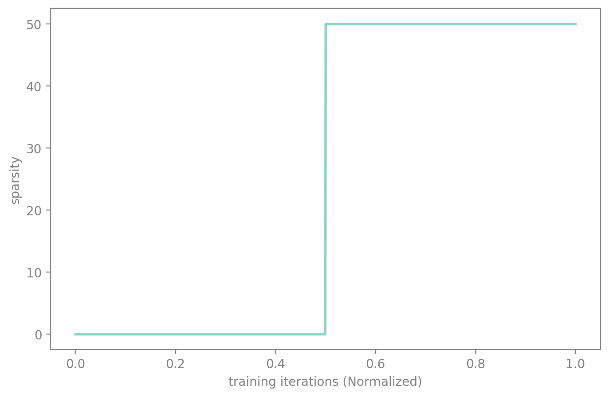
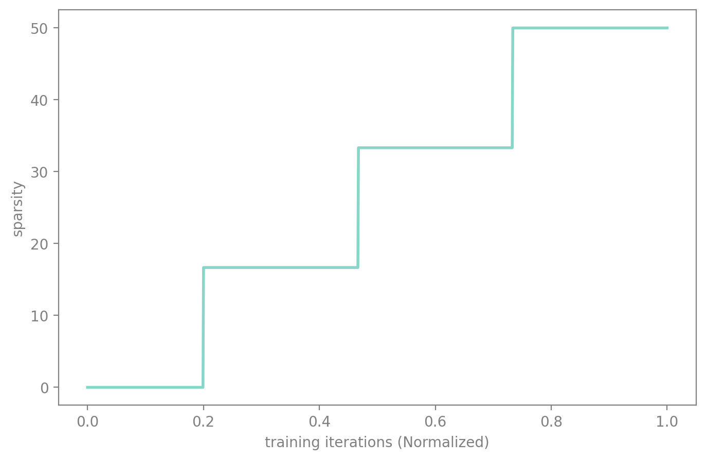
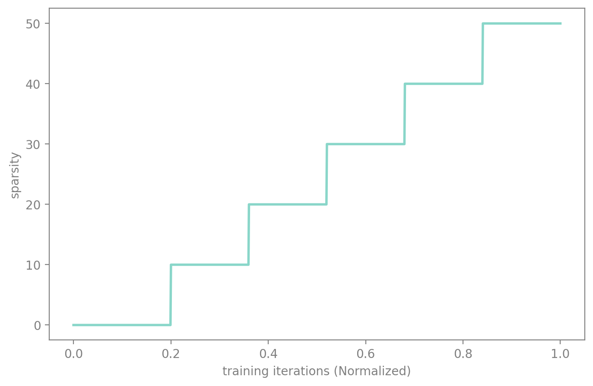
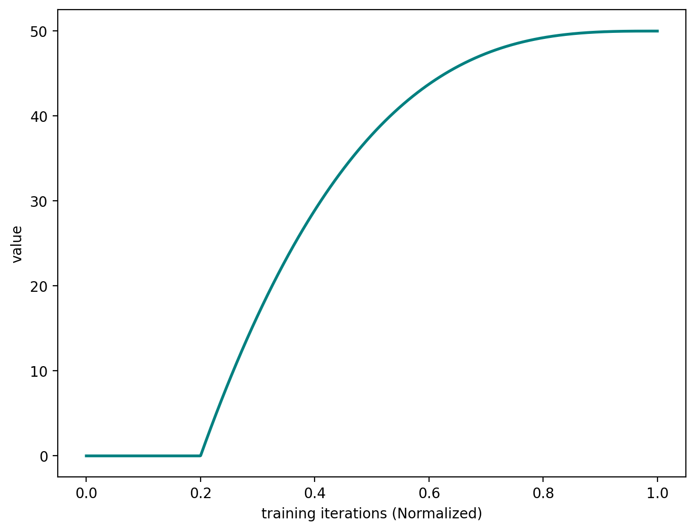
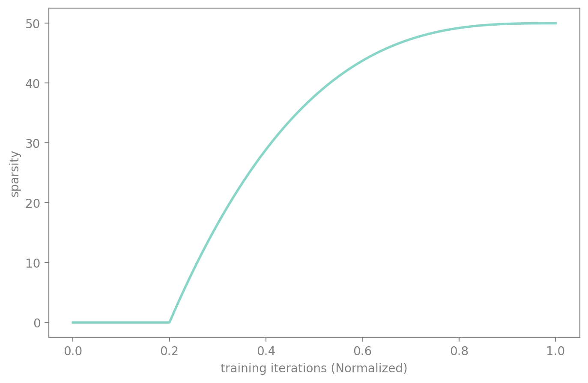
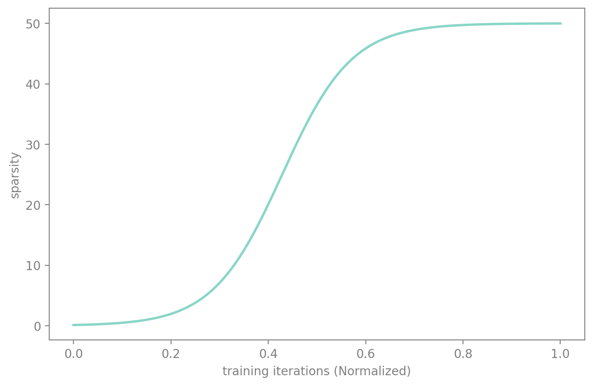
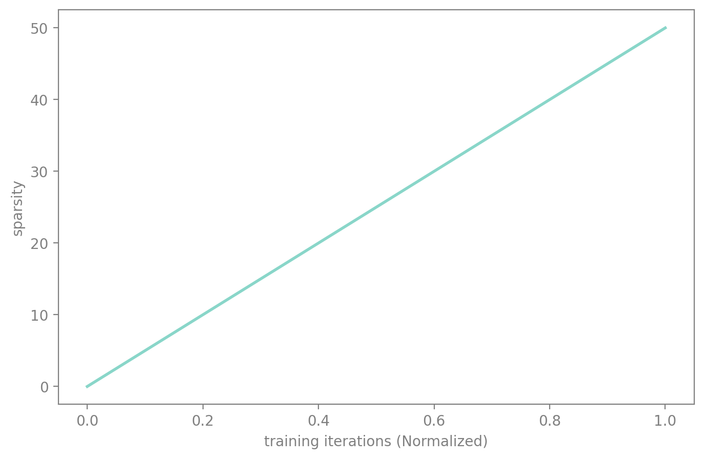
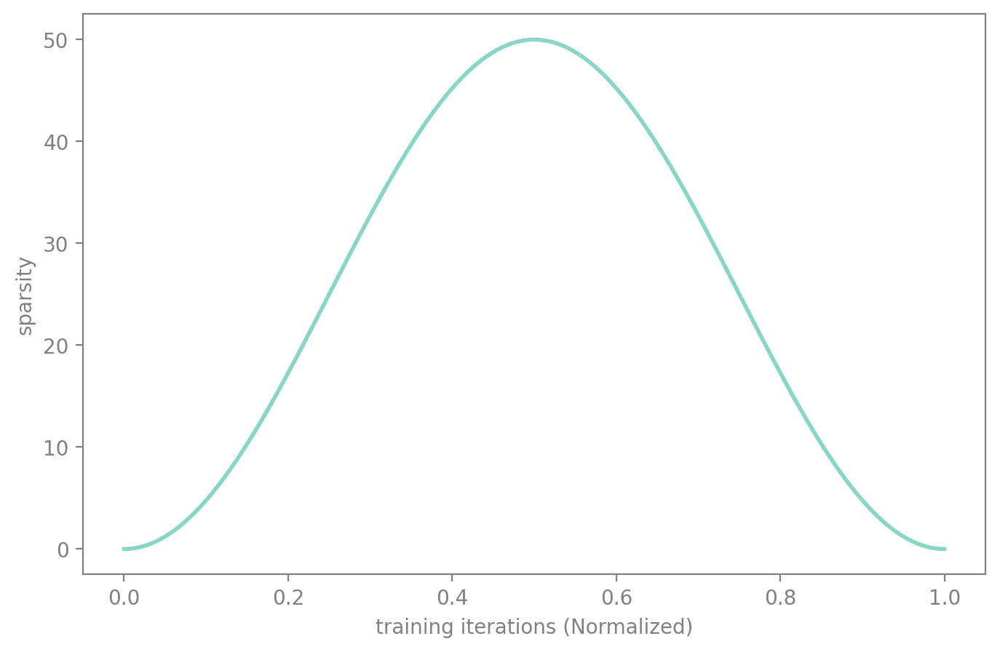
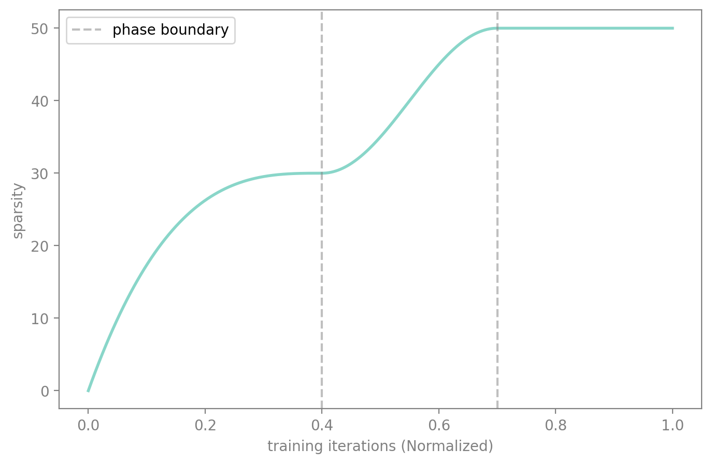

one_shot.plot(50)Schedules
When should I prune my network ?
Found permutation search CUDA kernels [ASP][Info] permutation_search_kernels can be imported. —
Schedule
def Schedule(
sched_func:Callable, # Function that computes progress at given training percentage
start_pct:float=0.0, # Percentage of training to start schedule
end_pct:float=1.0, # Percentage of training to end schedule
start_val:float=0.0, # Starting value for progress range
end_val:float=1.0, # Ending value for progress range
):
Base class to create schedules that return progress (0→1)
The Schedule class returns progress values from 0→1 by default, enabling the same schedule to work for sparsification, pruning, regularization, and distillation weight.
Key Method: schedule.progress(pct_train) returns how far along the schedule has progressed.
Parameters: - sched_func: the function that determines the progression curve (e.g., linear, cosine, AGP) - start_pct: training percentage at which the schedule begins (default: 0.0) - end_pct: training percentage at which the schedule completes (default: 1.0) - start_val: starting value of the progress range (default: 0.0) - end_val: ending value of the progress range (default: 1.0)
Usage:
# Get current value by multiplying target by progress
progress = schedule.progress(pct_train)
current_sparsity = target_sparsity * progress
current_weight = target_weight * progressThe start_val/end_val parameters enable schedule composition: chain multiple schedules where each picks up from where the previous one left off. See the Composing Schedules section below.
One-Shot
The easiest schedule is the one-shot pruning, i.e. prune the network once. This can be done by simply returning the desired sparsity value. The moment when you want to prune will be controlled by the start_epoch argument in the SparsifyCallback.
sched_oneshot
def sched_oneshot(
start:float, # Starting sparsity level
end:float, # Target sparsity level
pos:float, # Current position in schedule (0-1)
)->float:
One-shot pruning: jump directly to target sparsity

Iterative
Instead of pruning the network to desired sparsity in one step, you can do it iteratively. In fasterai, you can change the amount of iterations
sched_iterative
def sched_iterative(
start:float, # Starting sparsity level
end:float, # Target sparsity level
pos:float, # Current position in schedule (0-1)
n_steps:int=3, # Number of pruning steps
)->float:
Perform iterative pruning in discrete steps
iterative.plot(50)
To modify the default n_steps, you can use the partial function.
iterative = Schedule(partial(sched_iterative, n_steps=5), start_pct=0.2)iterative.plot(50)
Automated Gradual Pruning
Some researchers have come up with more sophisticated schedules, such as the Automated Gradual Pruning.
sched_agp
def sched_agp(
start:float, # Starting sparsity level
end:float, # Target sparsity level
pos:float, # Current position in schedule (0-1)
)->float:
Automated gradual pruning schedule with cubic decay
agp.plot(50)

One-Cycle Pruning
sched_onecycle
def sched_onecycle(
start:float, # Starting sparsity level
end:float, # Target sparsity level
pos:float, # Current position in schedule (0-1)
α:float=14, # Steepness parameter
β:float=6, # Offset parameter
)->float:
One-cycle schedule based on logistic function
one_cycle.plot(50)
On top of that, all of the schedules available in fastai by default are also available: - sched_cos - sched_linear
cos.plot(50)
lin.plot(50)Dense-Sparse-Dense
You can also create even more interesting behaviours such as the DSD method, where you prune the model in the first place, then re-grow it to its initial amount of parameter.
sched_dsd
def sched_dsd(
start:float, # Starting sparsity level
end:float, # Target sparsity level
pos:float, # Current position in schedule (0-1)
)->float:
Dense-Sparse-Dense schedule: increase then decrease sparsity
dsd.plot(50)
Composing Schedules
By default, progress() returns values in [0, 1]. But with start_val and end_val, you can control the output range of each schedule, making it easy to chain them together for multi-phase training.
For example, say you want to:
- Phase 1 (0%–40% of training): ramp sparsity from 0% to 30% using AGP
- Phase 2 (40%–70% of training): ramp sparsity from 30% to 50% using cosine
- Phase 3 (70%–100% of training): hold at 50%
Each schedule maps its [start_val, end_val] to a portion of the overall progress. The callback still just computes target * progress — the composition is entirely in the schedule definitions.
composed = [
Schedule(sched_agp, start_pct=0.0, end_pct=0.4, start_val=0.0, end_val=0.6), # 0→60% of target
Schedule(sched_cos, start_pct=0.4, end_pct=0.7, start_val=0.6, end_val=1.0), # 60→100% of target
# Phase 3: no schedule needed — last schedule holds at end_val after end_pct
]
The first schedule (AGP) ramps progress from 0.0 to 0.6, so target * progress goes from 0% to 30%. The second schedule (cosine) picks up at 0.6 and continues to 1.0, taking sparsity from 30% to 50%. After the last schedule’s end_pct, the progress holds at end_val — giving us the hold phase for free.
See Also
- SparsifyCallback - Apply sparsification during training using these schedules
- PruneCallback - Apply structured pruning during training
- Criteria - Different importance measures for selecting what to prune